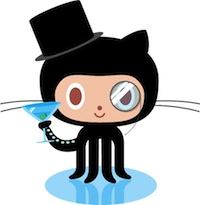

{kind=link}

bandwidth-efficient replacement for Pandora’s flash player.
Most of the features Pandora's flash client has are implemented. This means you can create, delete and rename stations. Adding and removing artists or songs to/from a station is possible.
Tracks can be rated, temporarily banned and moved to another station. Sending them to last.fm (“scrobbling”) is possible with the eventcmd interface.
Users outside the United States can listen to Pandora through a proxy. Keep in mind that you are violating Pandora's terms of use if you do so.
› ./pianobarfly
Welcome to pianobarfly (2011.08.06)!
(i) Login... Ok.
(i) Get stations... Ok.
0) Blondie Radio
2) Cafe Del Mar Radio
3) Clan Of Xymox Radio
5) Daft Punk Radio
6) David Bowie Radio
14) Kylie Minogue Radio
16) Mr. Bungle Radio
18) Orgy Radio
20) Skyhooks Radio
22) Smashing Pumpkins Radio
23) The Dandy Warhols Radio
24) The Flaming Lips Radio
25) The Sisters Of Mercy Radio
26) The Verve Radio
27) Tool Radio
28) U2 Radio
29) Ween Radio
30) Wisconsin Death Trip Radio
[?] Select station: 29
|> Station "Ween Radio" (490406435720742234)
(i) Receiving new playlist... Ok.
|> "Buckingham Green (Live)" by "Ween" on "Live"